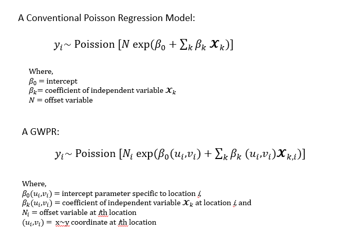
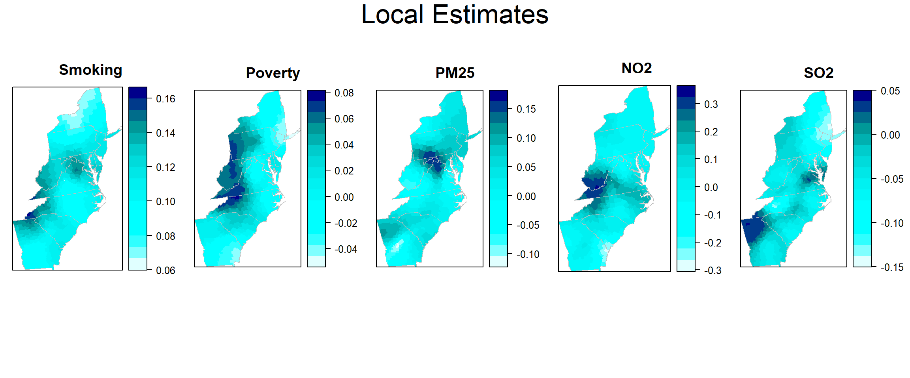
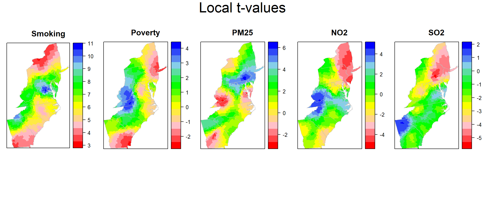
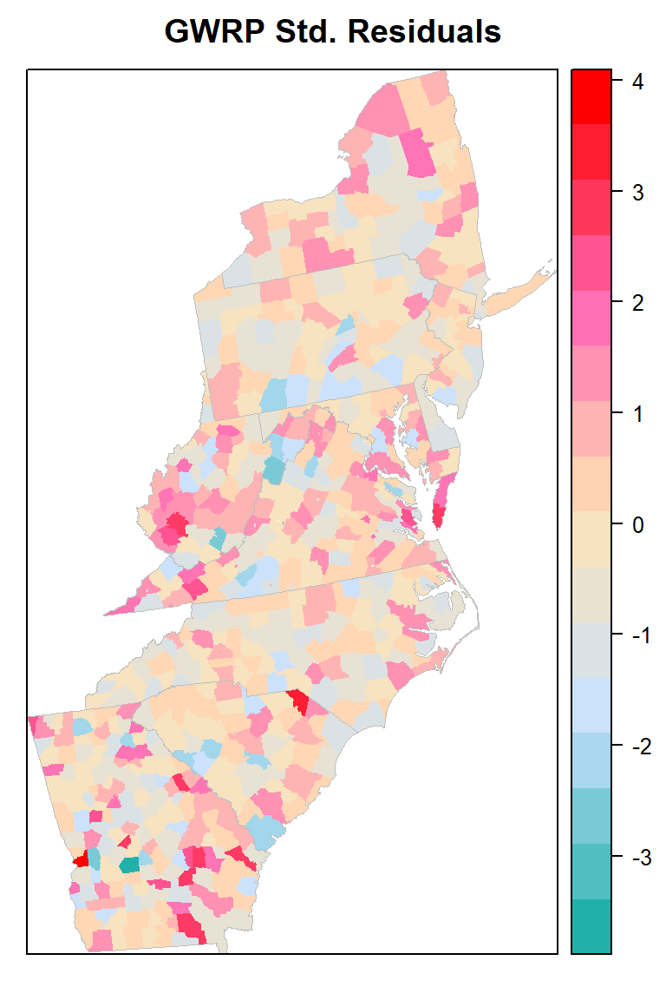

Geographically Weighted Poisson Regression (GWPR)
Geographically weighted Poisson regression is a local form of generalized linear models that assumes that data follow a Poisson distribution. We will use GWmodle package for GWPR analysis.
The form of the GWPR regression model is:

Load R packages
library(GWmodel) ### GW models
library(sp) ## Data management
library(spdep) ## Spatial autocorrelation
library(RColorBrewer) ## Visualization
library(classInt) ## Class intervals
library(raster) ## spatial data
library(grid) # plot
library(gridExtra) # Multiple plot
library(ggplot2) # Multiple plot
library(gtable)Load Data
The data use in this lesson could be found here.
# Define data folder
dataFolder<-"D:\\Dropbox\\Spatial Data Analysis and Processing in R\\Data_GWR\\"
county<-shapefile(paste0(dataFolder,"COUNTY_ATLANTIC.shp"))
state<-shapefile(paste0(dataFolder,"STATE_ATLANTIC.shp"))
mf<-read.csv(paste0(dataFolder,"data_atlantic_1998_2012.csv"), header=T)Create a data frame
df=mf[c(1,4:9)]
head(df)## FIPS Rate POV SMOK PM25 NO2 SO2
## 1 13111 72 15.920000 27.93333 11.75533 0.9776667 0.064184954
## 2 42115 59 12.220000 26.96667 9.02600 1.4999333 0.033210980
## 3 42075 61 8.986667 25.27333 11.96333 3.6164667 0.120281334
## 4 51683 62 7.860000 22.90000 12.73133 3.6219333 0.118371127
## 5 36057 59 14.746667 27.18000 8.30200 1.6327333 0.006404368
## 6 13149 86 17.506667 30.21333 12.27133 1.6258000 0.138780485Scale co-variates
df[, 3:7] = scale(df[, 3:7])Merge data with county shape file
SPDF<-merge(county,df, by="FIPS")
names(SPDF)## [1] "FIPS" "ID" "x" "y" "REGION_ID"
## [6] "DIVISION_I" "STATE_ID" "COUNTY_ID" "REGION" "DIVISION"
## [11] "STATE" "COUNTY" "Rate" "POV" "SMOK"
## [16] "PM25" "NO2" "SO2"Bandwidth selection
DM<-gw.dist(dp.locat=coordinates(SPDF))
bw.gwr <- bw.ggwr(Rate ~ POV+SMOK+PM25+NO2+SO2,
data = SPDF,
family = "poisson",
approach = "AICc",
kernel = "bisquare",
adaptive = TRUE,
dMat = DM )
bw.gwrFit the model
bgwr.res <- ggwr.basic(Rate ~ POV+SMOK+PM25+NO2+SO2,
data =SPDF,
family = "poisson",
bw = bw.gwr,
kernel = "bisquare",
adaptive = TRUE,
dMat = DM)bgwr.res## ***********************************************************************
## * Package GWmodel *
## ***********************************************************************
## Program starts at: 2020-01-08 14:03:11
## Call:
## ggwr.basic(formula = Rate ~ POV + SMOK + PM25 + NO2 + SO2, data = SPDF,
## bw = bw.gwr, family = "poisson", kernel = "bisquare", adaptive = TRUE,
## dMat = DM)
##
## Dependent (y) variable: Rate
## Independent variables: POV SMOK PM25 NO2 SO2
## Number of data points: 666
## Used family: poisson
## ***********************************************************************
## * Results of Generalized linear Regression *
## ***********************************************************************
##
## Call:
## NULL
##
## Deviance Residuals:
## Min 1Q Median 3Q Max
## -0.33778 -0.07926 -0.00795 0.07353 0.44683
##
## Coefficients:
## Estimate Std. Error z value Pr(>|z|)
## Intercept 4.240086 0.004671 907.821 < 2e-16 ***
## POV 0.009136 0.006197 1.474 0.140426
## SMOK 0.113173 0.006503 17.402 < 2e-16 ***
## PM25 0.031132 0.005253 5.926 3.1e-09 ***
## NO2 -0.022162 0.006208 -3.570 0.000357 ***
## SO2 -0.010988 0.005657 -1.943 0.052074 .
## ---
## Signif. codes: 0 '***' 0.001 '**' 0.01 '*' 0.05 '.' 0.1 ' ' 1
##
## (Dispersion parameter for poisson family taken to be 1)
##
## Null deviance: 1373.87 on 665 degrees of freedom
## Residual deviance: 658.89 on 660 degrees of freedom
## AIC: 670.89
##
## Number of Fisher Scoring iterations: 4
##
##
## AICc: 671.0189
## Pseudo R-square value: 0.5204135
## ***********************************************************************
## * Results of Geographically Weighted Regression *
## ***********************************************************************
##
## *********************Model calibration information*********************
## Kernel function: bisquare
## Adaptive bandwidth: 162 (number of nearest neighbours)
## Regression points: the same locations as observations are used.
## Distance metric: A distance matrix is specified for this model calibration.
##
## ************Summary of Generalized GWR coefficient estimates:**********
## Min. 1st Qu. Median 3rd Qu. Max.
## Intercept 4.08362541 4.19861446 4.22895519 4.25854869 4.3950
## POV -0.04589176 -0.01347790 0.00842714 0.03837710 0.0732
## SMOK 0.06640547 0.09796380 0.11303596 0.12827161 0.1598
## PM25 -0.10416849 -0.01108839 0.03140601 0.06959557 0.1627
## NO2 -0.26484877 -0.04248764 0.00060665 0.10294423 0.3235
## SO2 -0.13812259 -0.05804406 -0.03941077 -0.01816985 0.0381
## ************************Diagnostic information*************************
## Number of data points: 666
## GW Deviance: 410.4704
## AIC : 507.7076
## AICc : 515.5351
## Pseudo R-square value: 0.7012314
##
## ***********************************************************************
## Program stops at: 2020-01-08 14:03:12###s Save the summary output
# capture.output(print(bgwr.res),file="summary_GWRP.doc")Extract GWPR results
### Create spatial data frame
county@data$y<-bgwr.res$SDF$y
county@data$yhat<-bgwr.res$SDF$yhat
county@data$residual<-bgwr.res$SDF$residual
rsd=sd(county@data$residual)
county@data$stdRes<-(county@data$residual)/sd(county@data$residual)
county@data$LLN=county@data$yhat-1.645*rsd
county@data$ULN=county@data$yhat+1.645*rsd
# Intercept
county@data$Intercept<-bgwr.res$SDF$Intercept
county@data$est_SMOK<-bgwr.res$SDF$SMOK
county@data$est_POV<-bgwr.res$SDF$POV
county@data$est_PM25<-bgwr.res$SDF$PM25
county@data$est_NO2<-bgwr.res$SDF$NO2
county@data$est_SO2<-bgwr.res$SDF$SO2
# T-values
county@data$t_Intercept<-bgwr.res$SDF$Intercept_TV
county@data$t_SMOK<-bgwr.res$SDF$SMOK_TV
county@data$t_POV<-bgwr.res$SDF$POV_TV
county@data$t_PM25<-bgwr.res$SDF$PM25_TV
county@data$t_NO2<-bgwr.res$SDF$NO2_TV
county@data$t_SO2<-bgwr.res$SDF$SO2_TV
# Calculate psudo-t values
county@data$p_SMOK<-2*pt(-abs(bgwr.res$SDF$SMOK_TV),df=3103)
county@data$p_POV<-2*pt(-abs(bgwr.res$SDF$POV_TV),df=3103)
county@data$p_PM25<-2*pt(-abs(bgwr.res$SDF$PM25_TV),df=3103)
county@data$p_NO2<-2*pt(-abs(bgwr.res$SDF$NO2_TV),df=3103)
county@data$p_SO2<-2*pt(-abs(bgwr.res$SDF$SO2_TV),df=3103)
county$sig_SMOK <-ifelse(county@data$est_SMOK > 0 &
county@data$p_SMOK <= 0.05 , 1, 0)
county$sig_POV <-ifelse(county@data$est_POV > 0 &
county@data$p_POV <= 0.05 , 1, 0)
county$sig_PM25 <-ifelse(county@data$est_PM25 > 0 &
county@data$p_PM25 <= 0.05 , 1, 0)
county$sig_NO2 <-ifelse(county@data$est_NO2 > 0 &
county@data$p_NO2 <= 0.05 , 1, 0)
county$sig_SO2 <-ifelse(county@data$est_SO2 > 0 &
county@data$p_SO2 <= 0.05 , 1, 0)Plot GWRP Statistics
polys<- list("sp.lines", as(state, "SpatialLines"), col="grey", lwd=.8,lty=1)
col.palette<-colorRampPalette(c("blue", "sky blue", "green","yellow", "red"),space="rgb",interpolate = "linear")Plot Local Estimates
col.palette<-colorRampPalette(c("lightcyan","cyan","cyan1", "cyan2","cyan3","cyan4", "darkblue"),space="rgb",interpolate = "linear")
est_smok<-spplot(county,"est_SMOK", main = "Smoking",
sp.layout=list(polys),
col="transparent",
col.regions=col.palette(100))
est_pov<-spplot(county,"est_POV", main = "Poverty",
sp.layout=list(polys),
col="transparent",
col.regions=col.palette(100))
est_pm25<-spplot(county,"est_PM25", main = "PM25",
sp.layout=list(polys),
col="transparent",
col.regions=col.palette(100))
est_no2<-spplot(county,"est_NO2", main = "NO2",
sp.layout=list(polys),
col="transparent",
col.regions=col.palette(100))
est_so2<-spplot(county,"est_SO2", main = "SO2",
sp.layout=list(polys),
col="transparent",
col.regions=col.palette(100))grid.arrange(est_smok, est_pov,est_pm25,est_no2, est_so2,ncol= 5, heights = c(30,6), top = textGrob("Local Estimates",gp=gpar(fontsize=25)))
Plot Local t-values
col.palette.t<-colorRampPalette(c("blue", "sky blue", "green","yellow","pink", "red"),space="rgb",interpolate = "linear")
t_smok<-spplot(county,"t_SMOK", main = "Smoking",
sp.layout=list(polys),
col="transparent",
col.regions=rev(col.palette.t(100)))
t_pov<-spplot(county,"t_POV", main = "Poverty",
sp.layout=list(polys),
col="transparent",
col.regions=rev(col.palette.t(100)))
t_pm25<-spplot(county,"t_PM25", main = "PM25",
sp.layout=list(polys),
col="transparent",
col.regions=rev(col.palette.t(100)))
t_no2<-spplot(county,"t_NO2", main = "NO2",
sp.layout=list(polys),
col="transparent",
col.regions=rev(col.palette.t(100)))
t_so2<-spplot(county,"t_SO2", main = "SO2",
sp.layout=list(polys),
col="transparent",
col.regions=rev(col.palette.t(100)))grid.arrange(t_smok, t_pov,t_pm25,t_no2, t_so2,ncol=5, heights = c(30,6), top = textGrob("Local t-values",gp=gpar(fontsize=25)))
Plot Std-Residuals
myPaletteRes <- colorRampPalette(c("lightseagreen","lightsteelblue1", "moccasin","hotpink", "red"))
std_res<-spplot(county,"stdRes", main = "GWRP Std. Residuals",
sp.layout=list(polys),
col="transparent",
col.regions=myPaletteRes(100))
#windows(width=4, height=3.5)
#tiff( file="FIG_GWRP_Std_Residuals.tif",
# width=4, height=3.5,units = "in", pointsize = 12, res=1600,
# restoreConsole = T,bg="transparent")
print(std_res)
#dev.off()